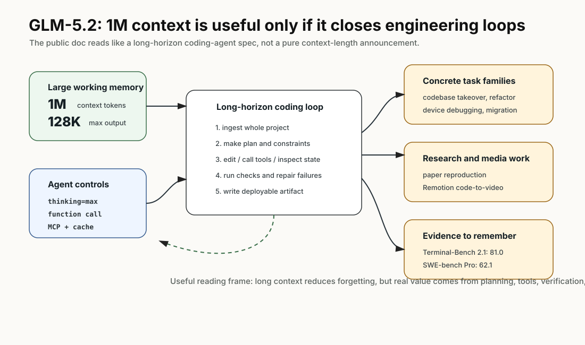
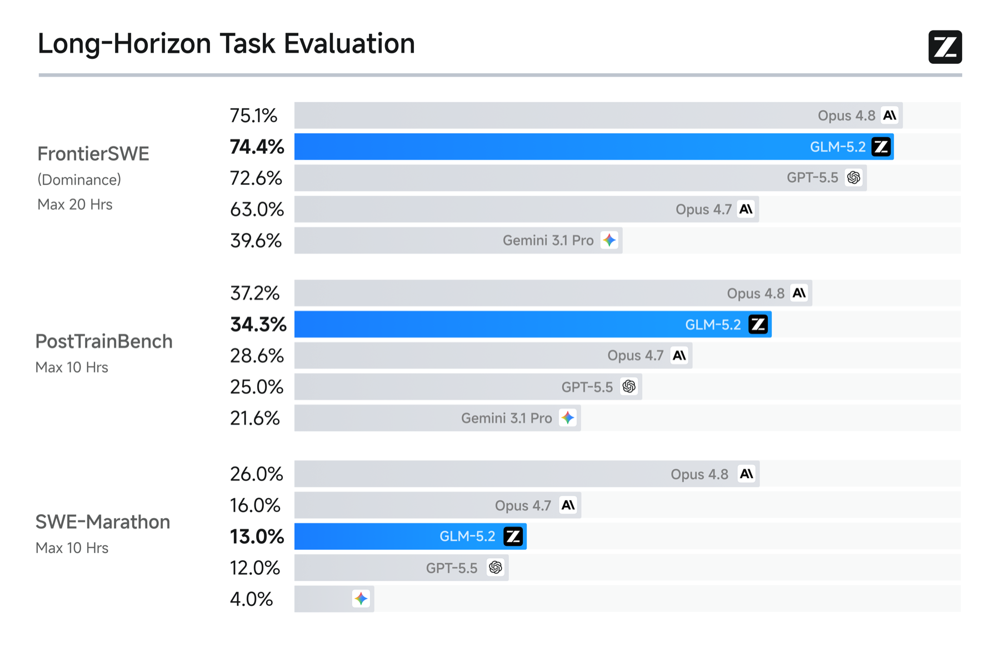
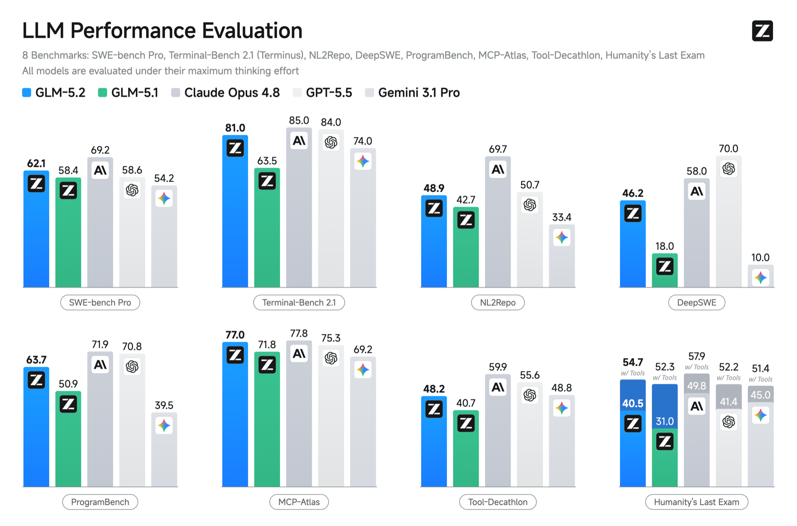

GLM-5.2：1M context 不是卖点，长链工程任务才是卖点
- Source: Z.AI GLM-5.2 官方文档
- 类型: 官方模型文档 / coding-agent 使用说明 / benchmark release
- 关键词: 1M context, 128K output, long-horizon coding, MCP, project-scale engineering
读法：给人和 agent 的路标
这篇不是 paper，所以不要用“方法、消融、方差”那套标准硬套。更合理的读法是：把 GLM-5.2 当成一个 长链工程 agent 的官方能力说明和任务样例库。快速路线是：先记 1M context / 128K output / MCP / function call，再看官方给的完整 task prompt，最后把 benchmark 数字按“官方 claim，需要更多协议细节”处理。
给 agent 以后检索时，关键词是：1M context、128K output、thinking mode、MCP、project-scale engineering、Terminal-Bench 2.1 81.0、SWE-bench Pro 62.1、task seed。这篇更适合用来设计自己的长链 coding-agent 测试，而不是作为严肃模型报告的唯一证据。
一句话判断
GLM-5.2 的官方叙事不是“上下文更长”这么简单，而是把 1M context、128K output、thinking mode、function calling、MCP 和工程任务示例组合成一个长链 coding agent；但它的公开材料更像产品技术文档，很多 benchmark protocol 还需要等更完整报告才能严格复查。
图表优先读法
| 先看 | 图/表/例子 | 读完应该抓住什么 |
|---|---|---|
| 1 | long-horizon agent map | GLM-5.2 的卖点是长上下文 + 工具 + MCP + 长输出的组合 |
| 2 | coding bench / long-context 图 | 官方数字要看清 benchmark protocol 和是否可复查 |
| 3 | task examples | 这类 model release 文档的价值在具体任务形态和 API 约束 |
| 4 | 机制理解 | 它更像产品能力说明，不是完整 peer-reviewed technical report |
先抓住四个点
- 核心规格很明确。 GLM-5.2 是 text-in/text-out 的 flagship foundation model，context length 1M，maximum output tokens 128K。
- 目标任务是 project-scale engineering。 文档反复强调 large-scale implementation、automated research、performance optimization、requirements-to-deployable-products，而不是单轮代码补全。
- 官方给了很多完整 task prompt。 包括整项目技术审计、长链重构、生产标准约束、Android 真机调试、微信小程序迁移、小游戏、论文复现、Remotion code-to-video。
- benchmark 数字强，但评测细节不够 paper 级。 Terminal-Bench 2.1 81.0 vs GLM-5.1 62.0，SWE-bench Pro 62.1 vs 58.4，这些很有信息量；但 FrontierSWE/PostTrainBench/SWE-Marathon 的完整协议、样本和方差在文档页里没有展开。
先看我整理的结构图

GLM-5.2 的重点不是“能塞 1M token”这个规格本身，而是把 1M context、128K output、thinking、function call、MCP 和工程任务模板连成一个长链 agent。图里右侧这些 task family，比单纯的 long-context 曲线更接近它的真实使用场景。
图里有三个锚点：
- 长上下文只是底座：真正的问题是模型能否在长项目里保持目标、约束、调用链和失败状态。
- 工具协议是能力的一部分：function call、MCP、structured output、context caching 决定它能不能接到真实工程环境。
- task family 比榜单更可复用：官方给的项目审计、重构、Android 调试、论文复现，更适合拿来做个人 benchmark seed。
官方图 / 数据作为证据

这张图承载的是 GLM-5.2 的主 claim：1M context 要能转化成长链工程任务能力。读的时候要注意，它不是单纯 needle retrieval，而是把 long-horizon coding benchmark 放进叙事里。
这张图要谨慎读：它说明官方想证明“1M context 对工程任务有用”，但如果没有完整 protocol，就不能只凭图判断和其他模型的绝对强弱。真正可写进记忆的是方向：Z.AI 把长上下文和长链 coding 放在同一个产品叙事里。

第二张图对应标准 coding benchmark。文档正文明确给出两个关键数：Terminal-Bench 2.1 上 GLM-5.2 是 81.0，GLM-5.1 是 62.0；SWE-bench Pro 上 GLM-5.2 是 62.1，GLM-5.1 是 58.4。
这张图的读法是：Terminal-Bench 2.1 的提升很大，说明 GLM-5.2 更强调 shell/工具/多步任务；SWE-bench Pro 的提升较小，但仍有进步。两者合起来比只看 SWE-bench 更能说明“长链工程 agent”的定位。
基本规格
| 项 | GLM-5.2 |
|---|---|
| 定位 | Flagship Foundation Model |
| 输入/输出 | Text / Text |
| Context length | 1M |
| Maximum output tokens | 128K |
| 能力开关 | Thinking mode、streaming、function call、context caching、structured output、MCP |
| Quickstart 典型设置 | thinking: enabled、reasoning_effort: max、max_tokens: 4096、temperature: 1.0 |
这里要注意：1M context 和 128K output 只是规格。真正有价值的是模型能不能在几十轮工具调用、跨文件修改、测试失败、重构回滚这些任务里持续保持约束。
关键 benchmark 数字
| Benchmark | GLM-5.2 | 对比项 | 备注 |
|---|---|---|---|
| Terminal-Bench 2.1 | 81.0 | GLM-5.1: 62.0 | 文档称 GLM-5.2 接近 Claude Opus 4.8 的 85.0，并领先 Gemini 3.1 Pro |
| SWE-bench Pro | 62.1 | GLM-5.1: 58.4 | 标准 coding benchmark |
| FrontierSWE | 未给表格原始数 | 文档称只落后 Opus 4.8 约 1% | 需要完整 protocol 才能严格复核 |
| PostTrainBench / SWE-Marathon | 未给表格原始数 | 文档称多项超过 GPT-5.5 与 Opus 4.7 | 适合作为官方 claim 记录，不适合作为独立结论 |
我的读法是：Terminal-Bench 2.1 和 SWE-bench Pro 两个数字最可写进记忆；其他 long-horizon benchmark 更像方向性证据，应该等完整报告或 leaderboard 细节再下强结论。
官方给的 task 例子
GLM-5.2 文档最有用的部分不是宣传语，而是这些完整任务模板。它们很适合拿来当自己评测 coding agent 的 seed。
| 场景 | 官方任务的核心要求 | 它在测什么 |
|---|---|---|
| Project-level codebase takeover | 读完整项目，输出架构图、模块职责、API contract、数据流、调用链、技术债、工程约束 | 长上下文理解、项目抽象、约束保持 |
| Long-horizon refactoring | 不改业务逻辑/API/runtime behavior，先给 plan、影响范围、风险边界、验证方法，再实现并测试 | 多步执行、风险控制、测试闭环 |
| Production-grade standards stress test | 遵守 lint/build/test/commit 规范，不加依赖、不改 API contract、不主动提交 | 约束遵守、工程卫生、边界感 |
| Android 真机调试 | Kotlin 客户端实现，多会话、流式消息、语音、通知、断线重连，安装到真机，用 ADB/logcat/screenshot 调试 | 代码生成 + 设备反馈闭环 |
| 微信小程序迁移 | 分析 Web 项目页面结构、用户路径、API contract、平台约束，再迁移到小程序 | 跨平台工程迁移 |
| Mini game | 先设计规则、状态机、关卡、计分、失败/结算，再实现可玩循环 | 状态机和产品完整性 |
| Research reproduction | 根据 paper/dataset 补实现细节，写 PyTorch 模型、loss、data pipeline、训练/推理脚本，跑通并对齐指标 | 论文到工程复现 |
| Remotion code-to-video | 用 React/Remotion 写视频 composition，渲染 MP4 | 代码驱动多媒体生成 |
这些例子比单个 benchmark 更贴近真实使用，因为它们把“理解需求、组织计划、改代码、跑工具、验证、解释剩余 gap”放在同一个任务里。
我会把这些例子直接当成自己的测试种子。它们比“写一个 todo app”更好，因为每个任务都有明确的工程约束：
- 不能只产出代码：还要先理解项目、给风险边界、说明验证方法。
- 不能只靠长上下文：还要会调用工具、读日志、处理平台限制。
- 不能只追一次通过：长链任务更看重计划、回滚、解释 gap 和最终交付。
机制上怎么理解
GLM-5.2 的文档没有公开完整训练 pipeline，所以这里不能把未知内容补成事实。但从文档可以明确看出它的运行机制目标：
- 把项目上下文一次性放进工作记忆。 1M context 用来减少长任务中的上下文断裂。
- 用 thinking mode 支撑长链计划。 Quickstart 推荐
reasoning_effort=max，说明官方建议复杂工程任务启用更强推理预算。 - 用工具能力闭环。 Function call、MCP、context caching、structured output 都是 agent 系统里的关键部件。
- 把输出预算拉长。 128K output 让模型能生成更长的 patch、plan、test report、复现说明。
换句话说，它的核心不是“模型能读 1M tokens”，而是“模型在读完之后还能持续执行工程判断”。
这也是我对 GLM-5.2 的判断边界：如果它只是在长上下文问答里强，那只是模型规格；如果它能在这些 task seed 里持续保持约束、运行工具并修正失败，那才是官方文档想表达的能力。
需要警惕的地方
- 文档说“Solid 1M lossless context”，但没有在页面里展开完整评测协议、误差、样本分布和失败案例。
- Long-horizon benchmark 的图很有价值，但如果要做严格比较，还需要知道 agent harness、工具、时间限制、是否允许上下文压缩、失败如何计分。
- 官方给的案例 prompt 很完整，但它们是推荐试法，不等于每个真实项目都能稳定一次通过。
- 1M context 会放大输入治理问题：无关文件、过期文档、生成文件、日志噪声都可能进入模型视野，context 越长越需要 repo hygiene。
对我的价值
如果拿 GLM-5.2 做个人 wiki / paper-reading / coding agent，我会先测这三个任务：
- 整 repo 审计。 让它读
personal-wiki，输出页面生成流程、Obsidian 到 Jekyll 的同步方式、哪些文件不该提交。 - 长链 paper note 发布。 给 paper PDF，让它生成 md、保存图片、跑 Jekyll build、修链接、提交。
- 受约束重构。 明确“不改变 URL、不改变 front matter、不提交 Obsidian 状态”，看它能不能完成小改动并报告验证。
这三类任务比单轮问答更能测出 GLM-5.2 官方 claim 里的长链工程能力。
这些测试可以直接变成我的个人 benchmark：每次换模型，都用同一套 repo、同一套任务、同一套验收标准比较。GLM-5.2 的价值不只是“可用模型候选”，也在于它官方文档给了一组很像真实工程工作的 prompt 形态。
一句话收束
GLM-5.2 最值得记住的是：它把 1M context 包装成一个面向长链工程任务的 agent 能力，而不是把长上下文本身当终点；可信数字可以先记 Terminal-Bench 2.1 81.0 和 SWE-bench Pro 62.1，其他 long-horizon claim 暂时按官方方向性证据处理。